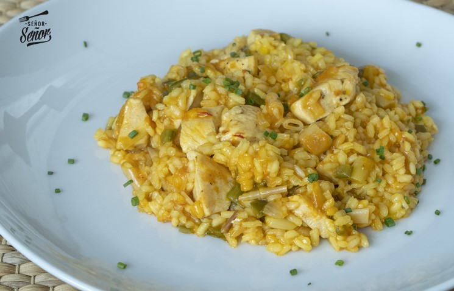

Arroz Pollo
Arroz con Pollo

†Ingredientes†
- 1 pechuga de pollo
- 200 gramos de arroz
- 1 cebolleta
- 1 diente de ajo
- 1 cucharada de pimiento choricero
- 100 ml de tomate frito
- Colorante
- 1 vaso de vino Blanco
- Sal, Pimienta

⩉Elaboración⩉
- Comenzamos pochando las verduras a fuego lento en una sartén con un poco de aceite de oliva virgen extra. Las tendremos unos 15 minutos a fuego suave.
- Pasado el tiempo añadimos el pollo troceado, yo en este caso he usado pechuga de pollo. La salpimentamos y la doramos con las verduras.
- Seguidamente añadimos el pimiento choricero y el tomate junto con el arroz. Subimos el fuego para anacarar el arroz.
- Añadimos el vaso de vino blanco y dejamos que se evapore por completo. Ahora es momento de cubrir con caldo, ponemos 3 veces la cantidad de arroz,
añadimos colorante o azafrán y dejamos cocinar 4 minutos a fuego fuerte y luego 15 minutos más a fuego lento.
- Cuando este cocinado el arroz, dejamos reposar unos minutos y a disfrutar un receta de arroz con pollo perfecta.